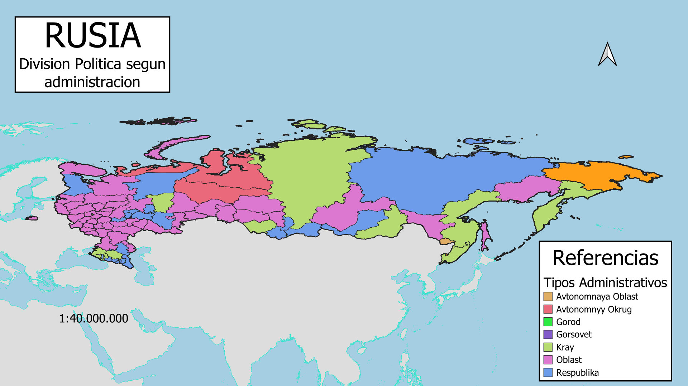
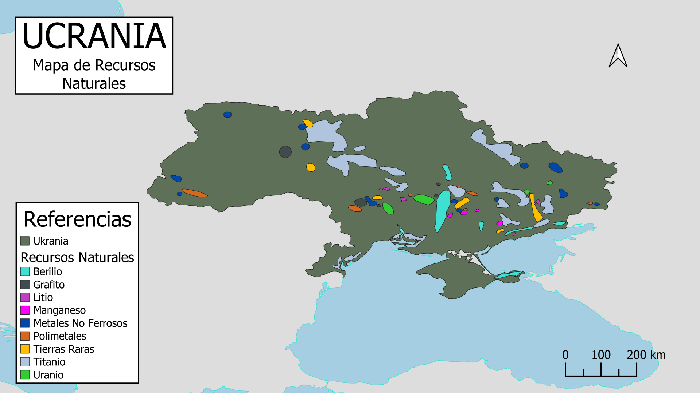

Guerra Rusia - Ukrania
☰
×
NAVEGACIÓN
Inicio
Menu 2
Menu 3
Menu 4
Menu 5
Regiones Geopoliticas segun Mckinder
Division Politica Rusa
Division Politica Rusa - Administracion

Recursos Naturales de Ukrania
